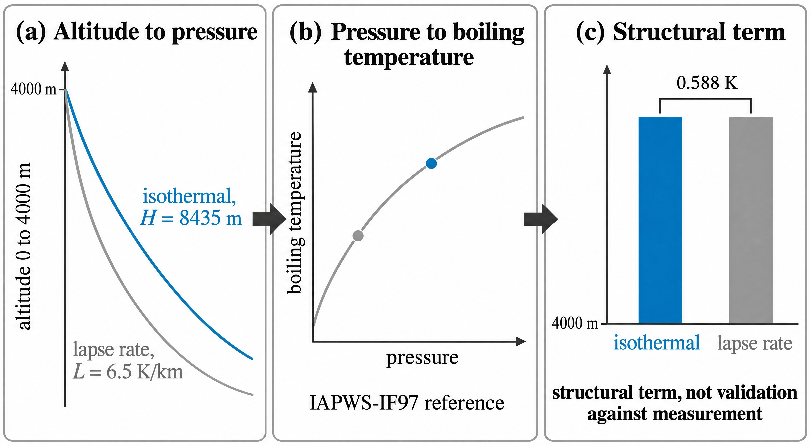

The finding
Question. How much does the isothermal barometric formula change the boiling estimate, compared with the lapse-rate form that follows the standard atmosphere, and where does that change pass the 0.5 K structural target?
At 4,000 m the adds 0.588 K to the boiling estimate. That is 0.088 K above the 0.5 K . The screen compares two models with the same , so it measures the model's own structural error, not agreement with measured boiling points.
Select a point on the chart, or move the altitude slider.
0.588 K
Structural term at 4000 m
At 4,000 m the isothermal form adds 0.588 K to the boiling estimate, 0.088 K above the 0.5 K structural target.
The is the isothermal boiling temperature minus the boiling temperature, computed on the same 100 m grid from 0 to 4,000 m. The target of 0.5 K was fixed before the calculation.
How it works
Question. What happens to one altitude, step by step, between the altitude and the structural term?
The walk-through uses the 4,000 m row of the reference grid. Move through the four stages with the buttons or the left and right arrow keys. Each stage shows the values the run recorded.

Explore the evidence
Question. Do the three vapour-pressure routes, with constant latent heat, Clausius-Clapeyron with temperature-dependent latent heat, and a refitted , differ in how far they miss the reference, and at which altitudes?
Compare the routes on the , which the Antoine fit did not see, or on all 81 grid points. The Antoine ranking is provisional, because its stability under a second fit range is untested.
Select a bar to read its value.
Constant L: constant latent heat (L). Varying L: temperature-dependent latent heat. Antoine: three-parameter Antoine refit, constants fitted on 273.15 to 363.15 K.
| Route | RMS error (K) | Maximum absolute error (K) | Altitude of maximum (m) |
|---|
The and the are both taken over the chosen points. Held-out error is measured on the 60 grid points whose reference boiling temperature lies between 363.15 and 373.15 K. The Antoine constants were fitted on the other points, so this subset tests the fit on data it did not see.
Item browser: grid points, reference against each route
Each row is one altitude on the 50 m grid. Select a row to see its reference boiling temperature beside each route's prediction and error. Filter to the held-out points, or to the points where some route misses by more than 0.1 K.
| Altitude | Split | Reference (K) | Constant L error (K) | Varying L error (K) | Antoine error (K) |
|---|
Try it: move the limit
Question. How many grid altitudes and route points would exceed a stricter or looser error limit, and where would the first exceedance be?
This view recomputes counts from the recorded values only: the 41 structural terms and the 81 route errors. It does not refit or resimulate anything. The 0.50 K setting is the paper's structural target.
Hover or select a point on the chart to read its value.
- Structural term above the limit
- -
- First altitude above the limit
- -
- Route errors above the limit (of 81 points)
- -
Where it fails
Question. Where do the formulas miss most, and why was no measured comparison possible?
Measured candidates that were rejected
| Source | Type | Station pressure | Uncertainty | Reason rejected |
|---|
What the paper says it does not show
- No measured boiling record was accepted, so the comparison with published boiling points is not testable here. The verdict on the 0.6 K total error bound is absent.
- The structural term is computed on one reference pressure model, and the primary Standard Atmosphere document was not read directly.
- The Antoine ranking is provisional. Its in-sample value did not reproduce on repetition, and its stability under a second fit range is untested.
- The Clapeyron check is close to an identity, because the same reference equations supply its inputs.
- Humidity, weather-driven pressure changes and dissolved solutes are excluded. The range covers 0 to 4,000 m only.